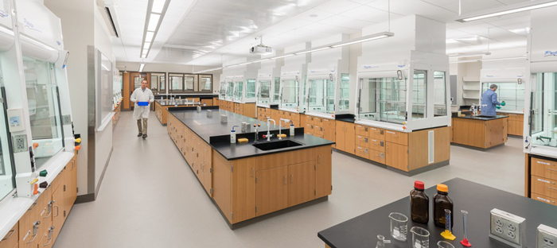
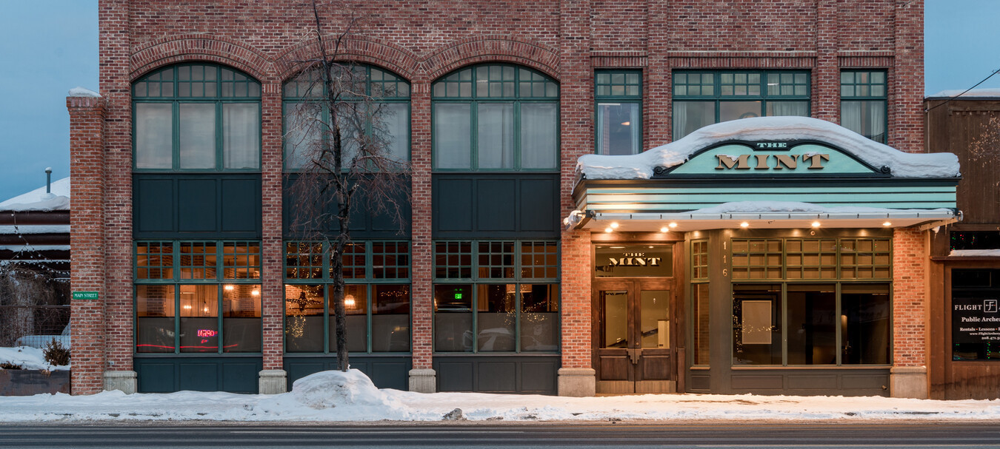

Laboratory:
January 2023-present: Volunteer Research Assistant.
I currenlty volunteer as a Research Assistant in the Spritzer Lab at Middlebury College in Middlebury, Vermont. I get to assist with a senior thesis on the effects of testosterone on neurogenesis. I help with cranial and castration surgeries on lab rats, prepar animals for surgeries and assisted with administration of pre and post-operative drugs, and ensure the best quality of care for each animal.
April-May 2021: Student Intern.
I interned for a Ph.D. candidate at the University of Hawaii Marine Mammal Lab in Manoa, Hawaii. My mentor was writing her dissertation on how the changes in marine soundscape due to anthropogenic impacts affected Hawaiian Monk Seals. I got to assist her with acoustic data analysis, data collection, and soundtrap deployement. I also got to assist other students within the Marine Mammal Lab with data collection for their projects.!
Teaching Assistant:
February 2023-present: Teaching Assistant.
I currenlty work as a Teaching Assistant at Middlebury College in Middlebury, Vermont. I run a peer-led discussion section for the Introductory Biology Ecology and Evolution Class where I assist students with content comprhension, act as a resource throughout the course, and help facilitate group work.
Sailing:
Summers 2021 and 2022: Optimist Green Race Coach.
Worked at the Beverly Yacht Club in Marion, MA as a race coach for 12-13 year olds. I also created daily lessons plans with my coworkers, ensured the safety of the sailors, and coordinated travel logistics with parents and families.
Summers 2015-2020: Head Junior Instructor.
Volunteered at Sachems Head Yacht Club in Guilford, CT as the head junior instructor. I assisted instructing 6-12 year olds in sailing skills and marine sciences. I also organized the 10 other volunteers and coordinated our schedules, and prepared the classrooms for lessons. I would also assist beginner students with rigging their boats.
Summers 2018-2020: Launch Driver.
Worked at Sachems Head Yacht Club in Guilford, CT as a launch driver. I shuttled boaters to and from their vessels, drove and managed boats, and managed schedules and tasks to maintain timely pickup and drop-offs of customers.
Waitressing:
Winter of 2018/2019: Waitress and Busser.
Worked at The Mint in Hailey, Idaho. Where I maintained 50 tables, dealt with customer conflict and problems when mistakes were made with orders and payments, and coordinates with the rest of the staff to maximize customer satisfaction.
Certifications:
- CPR/AED
- Standard First Aid
- Outdoor Emergency Care Technician
- PADI Open Water Diver
- CDC Heads Up
- US sailing Level 1
- Watercraft Operation
- Safesport
- CITI Program
- Guidelines for working with animals
- Moinitoring for Pain and Distress
- Working with Rats in Research Settings